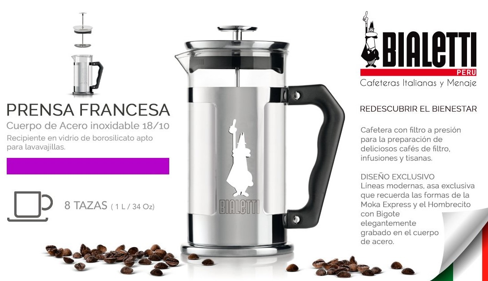

Blog
En este blog vas a estar siempre actualizado
Dejanos tu comentario al final de las noticias para seguir mejorando
3 errores comunes con el tueste de cafés de especialidad
Error #1. Modificar todas las variables de tu equipo sin una razón justificada e integral.
Actualizado hace 2 dias
¿CÓMO IMPACTA LA FERMENTACIÓN DEL CAFÉ EN LA CALIDAD (Y SU SALUD)?
El proceso de fermentación tiene un impacto importante en la calidad, la durabilidad y las notas finales en taza, de manera que un café bien procesado puede mejorar su puntuación en cata y conseguir acceso al mercado de cafés especiales, aumentando su precio de venta.
Actualizado hace 2 dias Leer más
Qué es el torrado
Grano al que se agrega azúcar durante el proceso de tostado. | Debido a las altas temperaturas, el azúcar se carameliza, crea una película que.
Actualizado hace 3 dias Leer más
¿Sabría cómo identificar el mejor café?
Seguro que a lo largo de toda su vida se ha tomado cientos y cientos de cafés. Y seguro que más de uno no ha sido el
Actualizado el 3 de Abril Leer más
Envianos tu receta y participa por una
Prensa Francesa Bialetti
